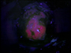
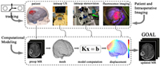

Gallery
The following presents links to our image galleries, which compile all the images on fluorescence guided resection and brain deformation presented on this website.
Fluorescence Guided Resection
Set 1
This gallery shows a number of images shown in our page on fluorescence guided resction, a Background.
Estimation of Intraoperative Brain Deformation
Set 1
This gallery shows a number of images shown in our page on estimation of intraoperative brain deformation.